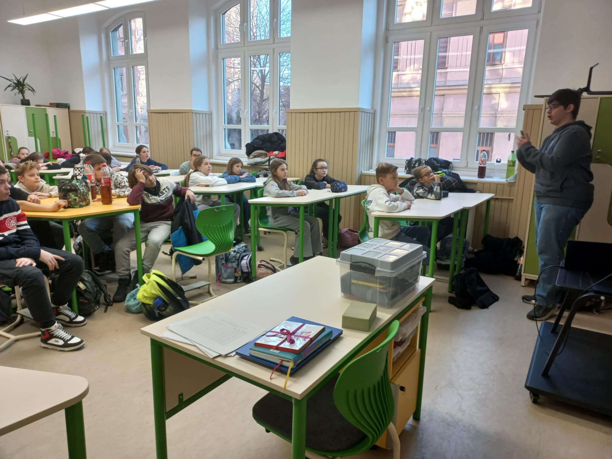
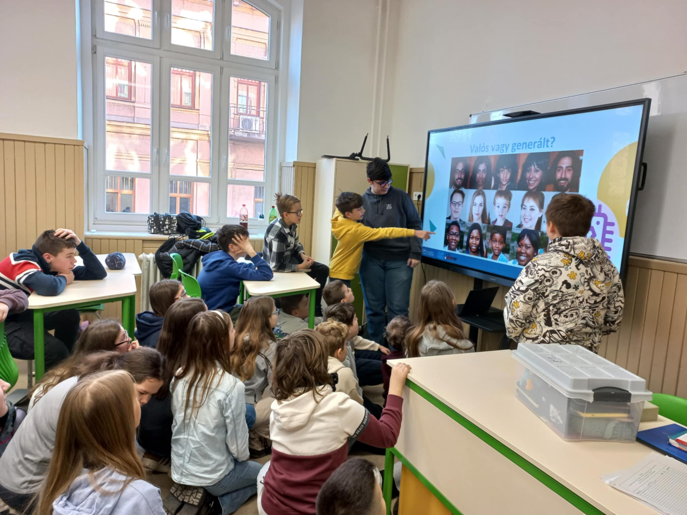

On the Trail of AI (presentation)
What can you tell 5th graders about AI? 🤖 – This was the questions I've asked myself just a week ago, when I started preparing for a presentation in my previous high school, to the Földes Ferenc Demonstration Grammar School of the University of Miskolc. On the 18th February I had the honour to give a speech on Artifical Intelligence to class 5.c in my previous high school. In short, this presentation covered how does machine learning and chatbots learn a small game with real or AI.
A little background story: at my high school the alumni community 🎓 plays a very important role in the school life. Former students (even graduates from several decades ago) regularly return and share what they have learned, what do they work on or anything else that might be interesting or relevant for the students. As I am back in my hometown on semester break, my former Hungarian teacher asked me, if I would speak to her class a bit about AI; how should students use it responsibly.
The greatest challenge with this presentation was for sure to figure out how can I make a topic like this interesting to 10-12 year-olds. This is already part of their day-to-day life: they hear about it from their siblings and parents, in school, maybe they have also used it already on their own, while still not understanding how does it work and what is it exactly. In my presentation I tried to focus on answering topics like this. I talked about the Turing-test as a demonstrational example, a little bit about how is machine learning learning (through a very basic example) and also about LLMs.
In the second half of the presentation, we focused on how can we actually use it: we talked a little bit about using awareness – when and what to ask, how to use it as a tool and not just a problem solver – how does it help when we describe something in detail and try to give as much context as we can in a prompt and also played a game with a few images: real or AI?. Students had to reason whether the shown image have been manipulated/created by AI or not. It was great to see that they were able to point out mostly which image was real and what are the usual "mistaktes" of AI.
My goal was not to get into a lot of details, neither to talk too scientifically, but to just give them a very broad understanding of being aware of the use of AI. I rather focused on keeping them curious and enthusiast about the topic and hope that they will be open to another lecture on this in the future. I am thankful to Ibolya Horváth, the class teacher of class 5.c, for organizing this for me.


Images shared have been released by the school. All rights reserved by them.
Participants: Levente László Pocsay1, 2, Ibolya Horváth3 (class teacher).
- University of Applied Sciences Upper Austria, Faculty of Informatics, Communications and Media (Hagenberg, Austria)
- HUN-REN Wigner Research Centre for Physics, Data and Compute Intensive Sciences Research Group (Budapest, Hungary)
- Földes Ferenc Demonstration Grammar School of the University of Miskolc (Miskolc, Hungary)